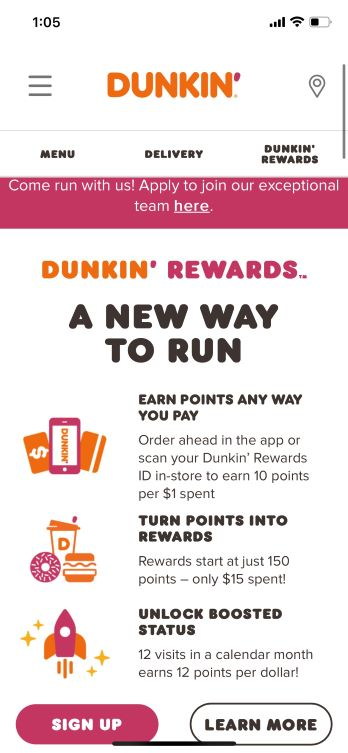

Repitition
ESPN Homepage

I love the ESPN website. It is so easy to use and just makes a ton of sense.
I chose this website because I think it is a great example of
repitition. I love how they reapeatedly use a logo for each sport and
in the drop down menu you see a very similiar pattern across each sport.
This allows the user to easily identify what they are looking for and feel
at ease while using the site. It also gives the user a sense of familiarity
as soon as they open up the website as they have seen those same logos
many times before.
Color
Dunkin Donuts Homepage

I think the dunkin donuts website is great example of color and contrast.
The orange and pink really pop, especially on the clean white background. Those two colors
also look great together and don't clash, yet are unqiue to dunkin donuts. This simple feature
helps the user to identify with dunkin donuts and appeals to us.
Visual Alignment
Code Art Homepage
The Code Art website is an excellent website, and is hard to capture
in just one screenshot. This site does a wonderful job of
exemplifying visual alignment and balance. Everything is optimized perfectly, and they do
a great job of featuring the information that they want you to see. They also do a great
job of keeping images and text centered, which makes for a clean crisp look.